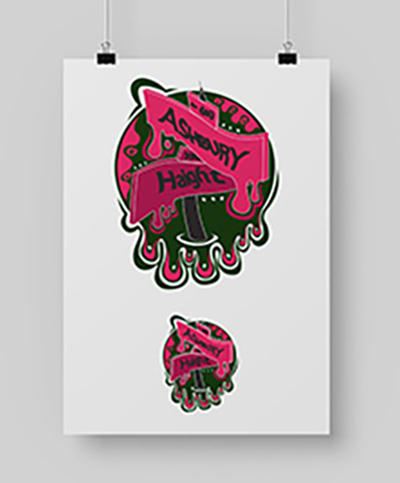

Summer of Love: 3 Icons
Digital Piece, 2022
This piece is a set of three icons, crafted on Adobe Illustrator, meant to capture and represent the essence of San Francisco’s “Summer of Love”. The Summer of Love aimed to oppose the current war and be a peaceful event where a diverse group of people could come together under the common interest. This intent though was quickly overshadowed by the abuse of drugs leaving many of the attendees in addictive or ill conditions. The images illustrated aim to communicate the peace associated with the event. However, they are contrasted with dark colors and the psychedelic theme meant to convey the bad that came along with that time.
